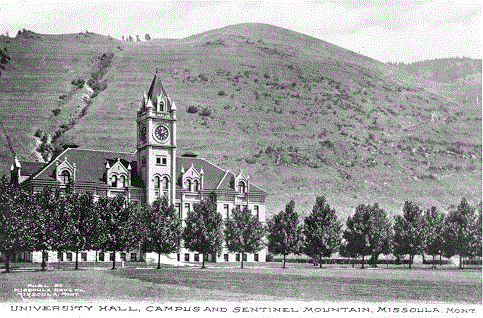

| UM Home | A to Z | UM Search | |||||
|
|
University of Montana
The University of Montana (often simply referred to as the U; U of M, and
UM) is a public research university located in Missoula, Montana, in the
United States. Founded in 1893, the university is the flagship campus of
the four-campus University of Montana System and is its largest institution.
The main campus is located at the foot of Mount Sentinel, the mountain bearing
Missoula's most recognizable landmark, a large hillside letter "M." It is a major
source of research, continuing education, economic development and fine arts, as well
as a driving force in strengthening Montana's ties with countries throughout the world.
The university calls itself a "city within a city," and contains its own restaurants,
medical facilities, banking, postal services, police department, and ZIP code. The University
of Montana ranks 17th in the nation and fifth among public universities in producing Rhodes
Scholars, with a total of 28 such scholars. The University of Montana has 11 Truman Scholars,14
Goldwater Scholars and 31 Udall Scholars to its name.
HistoryAn act of Congress of February 18, 1881 dedicated 72 sections (46,000 acres or 19,000 hectares) in Montana
Territory for the creation of the University. Montana was admitted to the Union on November 8, 1889, and the
Montana Legislature soon began to consider where the state's permanent capital and state university would be
located. To be sure that the new state university would be located in Missoula, the city's leaders made an
agreement with the standing capital of Helena that Missoula would stay out of the bidding for the new capital
and would support Helena over its leading competitor, Anaconda. The cities' bids were supported by the rival
Copper Kings, William A. Clark Marcus Daly, respectively. |
||||